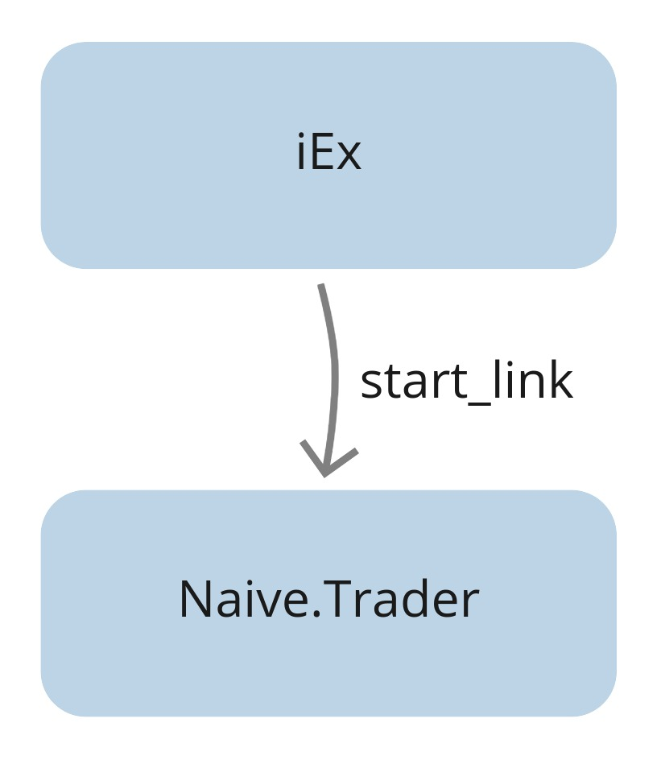
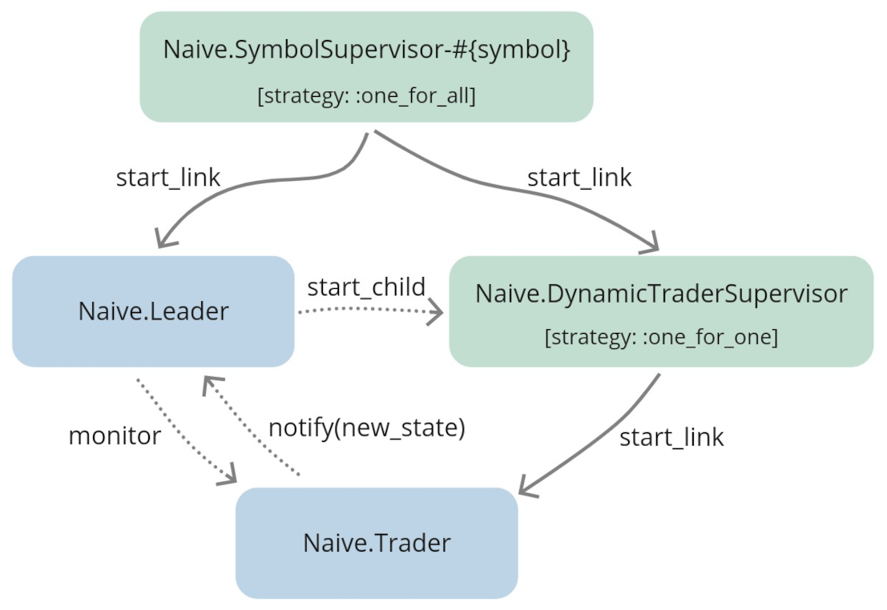

Chapter 5 Enable parallel trading on multiple symbols
5.1 Objectives
- design supervision tree that will allow trading using multiple traders in parallel per symbol
- update application supervisor
- implement
Naive.Server - implement
Naive.SymbolSupervisor
5.2 Introduction - architectural design
In the second chapter, we implemented a basic trader which goes through the trading cycle. Inside the iEx session, we were starting the Naive.Trader process using the start_link/1 function:

The GenServer.start_link/3 creates a link between IEx’s process and new Naive.Trader process. Whenever a trader process terminates(either finishes the trading cycle or there was an error), a new one won’t get started as there’s no supervision at all.
We can do much better than that with a little bit of help from Elixir and OTP.
Let’s introduce a supervisor above our trader process. It will start a new trader process whenever the previous one finished/crashed:

This looks much better but there are few problems with it. So, when the trader will start to place orders it will be in some state(it will hold buy/sell orders) that the supervisor won’t be aware of. In case of trader crashing, the supervisor will start a new trader without any knowledge of possibly placed orders or any other information from the state(it will be started with a “fresh” state).
To fix that we need to keep a copy of the trader’s state outside of the trader process - that’s why we will introduce a new server called Naive.Leader that will keep track of traders’ data:
The Naive.Leader will become the interface to start new traders. It will call the start_child/1 function of the Supervisor, then consequently DynamicTraderSupervisor will call the start_link/1 function of our Naive.Trader module.
We can also see that our Naive.Trader’s are now started with the temporary restart option. Setting this option will disallow the Supervisor from restarting the traders on its own. The responsibility of restarting traders will now be shifted to the leader. The leader will monitor the traders and restart them to a correct state when any crashes.
As trader state will get updated, it will notify the leader about its new state to be stored. This way whenever a trader process would crash, the leader will be able to start a new trader process with the last known state.
This setup will also allow us to start and supervise multiple traders for a single symbol which our naive strategy will require in the future(next chapter).
For each symbol that we will be trading on we need the above trio of services(Leader + DynamicTraderSupervisor + Trader), to effectively initialize(and supervise) them we will add an Naive.SymbolSupervisor that will start both Naive.Leader and Naive.Dynamic:

We will need multiple symbol supervisors, one for each symbol that we would like to trade on. As with traders, they will be dynamically started on demand, this should give us a hint that we need another dynamic supervisor that will supervise symbol supervisors and will be the direct child of our Naive.Supervisor(Naive.Application module):

You could ask yourself why we don’t need some additional server to track which symbols are traded at the moment (in the same way as Naive.Leader tracks Naive.Traders). The answer is that we don’t need to track them as we register all Naive.SymbolSupervisors with a name containing a symbol that they trade on. This way we will always be able to refer to them by registered name instead of PIDs/refs.
Here’s what happens starting from the top of the graph:
- the
Naive.Applicationis our top-level application’s supervisor for thenaiveapp, it was auto-generated as a part of thenaiveapp - it has a single child
Naive.DynamicSymbolSupervisor, which has strategy one_for_one and all of its children areNaive.SymbolSupervisors Naive.SymbolSupervisorprocess will start two further children: theNaive.LeaderandDynamicTraderSupervisor, both created on init- the
Naive.Leaderwill askDynamicTraderSupervisorto start theNaive.Traderchild process(es)
This can be a little bit confusing at the moment but it will get a lot easier as we will write the code. Let’s get to it!
5.2.1 Update application supervisor
Let’s start by adding a Naive.DynamicSymbolSupervisor and a server to the children list of the Naive.Application supervisor:
5.3 Implement Naive.SymbolSupervisor
Next, time for the Naive.SymbolSupervisor, the first step will be to create a file called symbol_supervisor.ex inside apps/naive/lib/naive directory. There’s no point in using the DynamicSupervisor, as we know the children that we would like to start automatically on init. This is a full implementation of the supervisor and it’s a simple as just listing child processes inside the init function:
# /apps/naive/lib/naive/symbol_supervisor.ex
defmodule Naive.SymbolSupervisor do
use Supervisor
require Logger
def start_link(symbol) do
Supervisor.start_link(
__MODULE__,
symbol,
name: :"#{__MODULE__}-#{symbol}"
)
end
def init(symbol) do
Logger.info("Starting new supervision tree to trade on #{symbol}")
Supervisor.init(
[
{
DynamicSupervisor,
strategy: :one_for_one,
name: :"Naive.DynamicTraderSupervisor-#{symbol}"
},
{Naive.Leader, symbol}
],
strategy: :one_for_all
)
end
endIt’s advised to keep supervisor processes slim.
We registered the Naive.SymbolSupervisor processes with names, which will help us understand the supervision tree inside the observer GUI(it will also allow us to stop those supervisors in the future).
As mentioned previously whenever either the Naive.Leader or Naive.DynamicSymbolSupervisor-#{symbol} would crash we would like to kill the other child process as we won’t be able to recover the state - it’s just easier to init both again.
5.4 Implement Naive.Leader
It’s time for the Naive.Leader module, again, the first step will be to create a file called the leader.ex inside apps/naive/lib/naive directory. At this moment it will be a skeleton GenServer implementation just to get the code to compile:
# /apps/naive/lib/naive/leader.ex
defmodule Naive.Leader do
use GenServer
def start_link(symbol) do
GenServer.start_link(
__MODULE__,
symbol,
name: :"#{__MODULE__}-#{symbol}"
)
end
def init(symbol) do
{:ok, %{symbol: symbol}}
end
endAt this moment we have half of the supervision tree working so we can give it
a spin in iex. Using the observer we will be able to see all processes created when the start_trading/1 function gets called:
The above function will open a new window looking as follows:

To clearly see the supervision tree we will click on the “Applications” tab at the top - the following tree of processes will be shown on the left:

If any other process tree is visible, go to the list on the left and select the naive application.
The Naive.Supervisor is our Naive.Application module(you can confirm that by checking the name option send to the start_link function inside the module). It starts the Naive.DynamicSymbolSupervisor.
We can now call the Naive.start_trading/1 function couple time to see how the tree will look like with additional processes(go back to the iex session):
...
iex(2)> Naive.start_trading("adausdt")
23:14:40.974 [info] Starting new supervision tree to trade on ADAUSDT
{:ok, #PID<0.340.0>}
iex(3)> Naive.start_trading("xrpusdt")
23:15:12.117 [info] Starting new supervision tree to trade on XRPUSDT
{:ok, #PID<0.345.0>}We can see that two new branches were created:
SymbolSupervisor-ADAUSDTSymbolSupervisor-XRPUSDT
Each of them contains a Naive.Leader and DynamicTraderSupervisor.
5.4.1 Updating the leader module
Let’s jump back to extending a leader implementation to get those traders running.
We will introduce a leader’s state that will consist of a symbol, setting, and a list of traders’ data. Trader data will hold PID, ref, and state of the trader:
# /apps/naive/lib/naive/leader.ex
...
alias Naive.Trader
require Logger
@binance_client Application.compile_env(:naive, :binance_client)
defmodule State do
defstruct symbol: nil,
settings: nil,
traders: []
end
defmodule TraderData do
defstruct pid: nil,
ref: nil,
state: nil
endWe will use a handle_continue callback which was introduced in Erlang 21 to
initialize the leader asynchronously. To do that we will return a tuple starting with a :continue atom from inside the init function:
# /apps/naive/lib/naive/leader.ex
def init(symbol) do
{:ok,
%State{
symbol: symbol
}, {:continue, :start_traders}}
endThe Naive.Leader will fetch symbol settings and based on them, it will build the state for traders so they don’t need to fetch the same settings again. It will also start as many traders there were set under chunks key in setting:
# /apps/naive/lib/naive/leader.ex
# below init()
def handle_continue(:start_traders, %{symbol: symbol} = state) do
settings = fetch_symbol_settings(symbol)
trader_state = fresh_trader_state(settings)
traders = for _i <- 1..settings.chunks,
do: start_new_trader(trader_state)
{:noreply, %{state | settings: settings, traders: traders}}
endFetching symbol settings will be hardcoded for time being to keep this chapter focused. We will also move the code responsible for fetching tick
size from the Naive.Trader to the Naive.Leader and hardcode the rest of the values:
# /apps/naive/lib/naive/leader.ex
defp fetch_symbol_settings(symbol) do
tick_size = fetch_tick_size(symbol)
%{
symbol: symbol,
chunks: 1,
# -0.12% for quick testing
profit_interval: "-0.0012",
tick_size: tick_size
}
end
defp fetch_tick_size(symbol) do
@binance_client.get_exchange_info()
|> elem(1)
|> Map.get(:symbols)
|> Enum.find(&(&1["symbol"] == symbol))
|> Map.get("filters")
|> Enum.find(&(&1["filterType"] == "PRICE_FILTER"))
|> Map.get("tickSize")
endAdditionally, we need to create a helper method that we used inside the handle_continue/2 callback called fresh_trader_state/1:
# /apps/naive/lib/naive/leader.ex
# place this one above the `fetch_symbol_settings` function
defp fresh_trader_state(settings) do
struct(Trader.State, settings)
endStarting a new trader isn’t any different from the code that we already wrote to start a new Naive.SymbolSupervisor. We need to call the DynamicSupervisor.start_child/2 function and start to monitor the process:
5.4.2 Updating the Naive.Trader module
Now we can update the Naive.Trader, first, we will set restart to be temporary to avoid restarting it by the Naive.DynamicTraderSupervisor:
Next, we will update the start_link/1 and init/1 functions to take the state instead of building it from args:
# /apps/naive/lib/naive/trader.ex
def start_link(%State{} = state) do
GenServer.start_link(__MODULE__, state)
end
def init(%State{symbol: symbol} = state) do
symbol = String.upcase(symbol)
Logger.info("Initializing new trader for symbol(#{symbol})")
Phoenix.PubSub.subscribe(
Streamer.PubSub,
"TRADE_EVENTS:#{symbol}"
)
{:ok, state}
endNext, we need to update two handle_info/2 callbacks that change the state of the Naive.Trader process(when placing buy order and when placing sell order). They will need to notify the Naive.Leader that the state is changed before returning it:
# /apps/naive/lib/naive/trader.ex
...
def handle_info(
...
) do
Logger.info("Placing buy order (#{symbol}@#{price})")
...
new_state = %{state | buy_order: order}
Naive.Leader.notify(:trader_state_updated, new_state)
{:noreply, new_state}
end
def handle_info(
...
) do
...
Logger.info("Buy order filled, placing sell order ...")
...
new_state = %{state | sell_order: order}
Naive.Leader.notify(:trader_state_updated, new_state)
{:noreply, new_state}
end
...5.4.3 Finalizing Naive.Leader implementation
Now we need to get back to the Naive.Leader where we will implement the notifying logic. We will start with the notify function that will just call the Naive.Leader process:
# /apps/naive/lib/naive/leader.ex
# below init
def notify(:trader_state_updated, trader_state) do
GenServer.call(
:"#{__MODULE__}-#{trader_state.symbol}",
{:update_trader_state, trader_state}
)
endNow, it’s time for a callback function that will handle the trader state update. As this is a handle_call/3 callback we have access to the trader PID which sent the notification message. We will try to find that trader in the list of traders. If that’s successful we will update the cached state for that
trader locally:
# /apps/naive/lib/naive/leader.ex
# below handle_continue
def handle_call(
{:update_trader_state, new_trader_state},
{trader_pid, _},
%{traders: traders} = state
) do
case Enum.find_index(traders, &(&1.pid == trader_pid)) do
nil ->
Logger.warn(
"Tried to update the state of trader that leader is not aware of"
)
{:reply, :ok, state}
index ->
old_trader_data = Enum.at(traders, index)
new_trader_data = %{old_trader_data | :state => new_trader_state}
{:reply, :ok, %{state | :traders =>
List.replace_at(traders, index, new_trader_data)}}
end
endAnother callback functions that we will need to provide are two handle_info/2 functions that will handle the trade finished scenario as well as crashed trader.
First, trade finished scenario. As previously, we will try to find the trader data in the traders list. If that’s successful, we will start a new trader with a fresh state. We will also overwrite existing trader data locally(as PID, ref, and state changed):
# /apps/naive/lib/naive/leader.ex
# below state updated handle_call callback
def handle_info(
{:DOWN, _ref, :process, trader_pid, :normal},
%{traders: traders, symbol: symbol, settings: settings} = state
) do
Logger.info("#{symbol} trader finished trade - restarting")
case Enum.find_index(traders, &(&1.pid == trader_pid)) do
nil ->
Logger.warn(
"Tried to restart finished #{symbol} " <>
"trader that leader is not aware of"
)
{:noreply, state}
index ->
new_trader_data = start_new_trader(fresh_trader_state(settings))
new_traders = List.replace_at(traders, index, new_trader_data)
{:noreply, %{state | traders: new_traders}}
end
endHere we will assume that whenever the reason that the Naive.Trader process died is :normal that means that we stopped it after trade cycle finished.
The final callback that we need to provide will handle the scenario where the trader crashed. We would like to find the cached state of the crashed trader and start a new one with the same state and then update the local cache as PID and ref will change for that trader:
# /apps/naive/lib/naive/leader.ex
# below trade finished handle_info callback
def handle_info(
{:DOWN, _ref, :process, trader_pid, reason},
%{traders: traders, symbol: symbol} = state
) do
Logger.error("#{symbol} trader died - reason #{reason} - trying to restart")
case Enum.find_index(traders, &(&1.pid == trader_pid)) do
nil ->
Logger.warn(
"Tried to restart #{symbol} trader " <>
"but failed to find its cached state"
)
{:noreply, state}
index ->
trader_data = Enum.at(traders, index)
new_trader_data = start_new_trader(trader_data.state)
new_traders = List.replace_at(traders, index, new_trader_data)
{:noreply, %{state | traders: new_traders}}
end
end5.4.4 IEx testing
That finishes the implementation part, let’s jump into the IEx session to see how it works.
We will start the observer first, then we will start trading on any valid symbol.
When our trader will start, you should be able to right-click and select “Kill process”(leave the reason as kill) and click “OK”. At that moment you should see that the PID of the trader changed and we can also see a log message from the leader.
$ iex -S mix
...
iex(1)> :observer.start()
:ok
iex(2)> Naive.start_trading("xrpusdt")
00:04:35.041 [info] Starting new supervision tree to trade on XRPUSDT
{:ok, #PID<0.455.0>}
00:04:37.697 [info] Initializing new trader for XRPUSDT
iex(3)>
00:08:01.476 [error] XRPUSDT trader died - trying to restart
00:08:01.476 [info] Initializing new trader for XRPUSDT[Note] Please remember to run the mix format to keep things nice and tidy.
Source code for this chapter can be found at Github